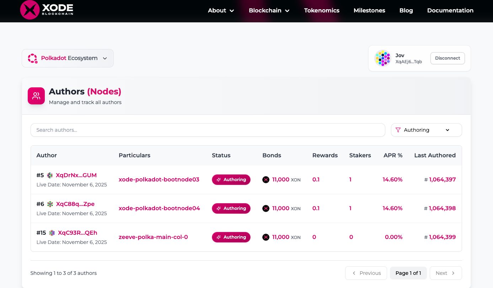
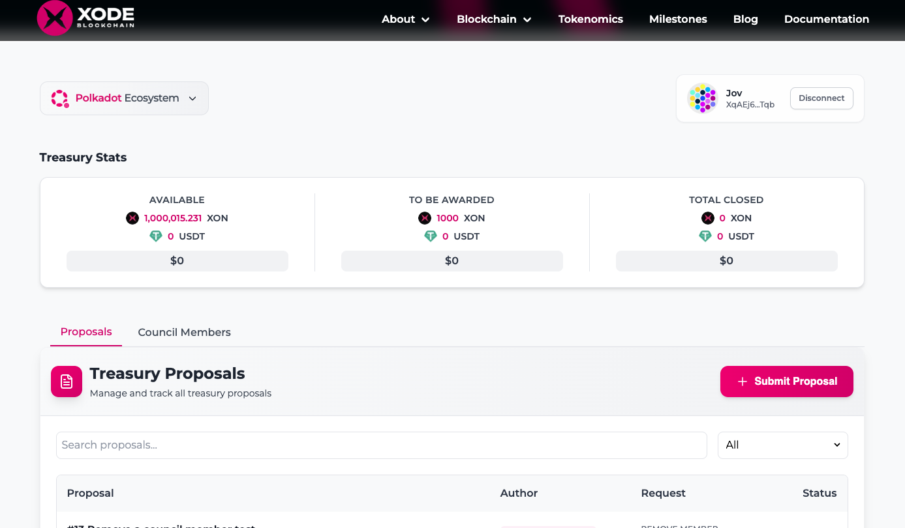

<ion-content [fullscreen]="true" class="explore-content">
  <div class="ion-padding-horizontal">
    <ion-grid>
      <ion-row>
        <ion-col size="12">
          <div class="ion-text-center ion-padding-start ion-padding-end ion-padding-bottom title">
            <h1 style="font-weight: bold">Explore</h1>
            <span style="font-size: 16px;">
              Discover amazing services and opportunities within the Xterium ecosystem.
            </span>
          </div>
        </ion-col>
      </ion-row>
      <ion-row>
        <ion-col size="12">
          <ion-card class="explore-card" (click)="goToStaking()">
            <div class="explore-card-image">
              
            </div>
            <ion-card-header>
              <ion-card-title>Xode Staking</ion-card-title>
              <ion-card-subtitle>Web3 Infrastructure</ion-card-subtitle>
            </ion-card-header>
            <ion-card-content>
              Stake your assets on Xode's secure platform and earn competitive rewards. Our staking service provides
              reliable infrastructure with high uptime and optimal returns for your investments.
            </ion-card-content>
          </ion-card>
        </ion-col>
        <ion-col size="12">
          <ion-card class="explore-card" (click)="goToGovernance()">
            <div class="explore-card-image">
              
            </div>
            <ion-card-header>
              <ion-card-title>Xode Governance</ion-card-title>
              <ion-card-subtitle>Decentralized Decision Making</ion-card-subtitle>
            </ion-card-header>
            <ion-card-content>
              Participate in the governance of Xode by staking your assets and voting on key decisions. Our platform
              empowers users to have a say in the future of the ecosystem.
            </ion-card-content>
          </ion-card>
        </ion-col>
      </ion-row>
    </ion-grid>
  </div>
</ion-content>
